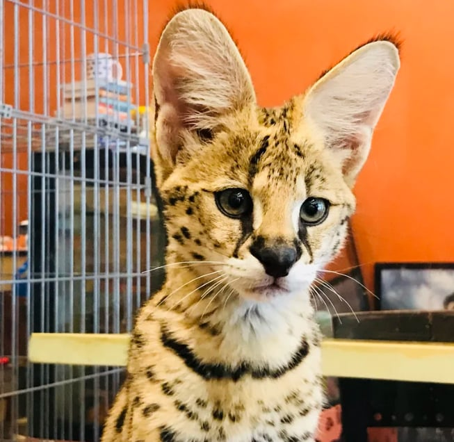

QUEZON CITY · BEST FOR BENGAL FANS
Bengal Brew
Bengal Brew is the obvious archive choice for anyone fascinated by energetic Bengal cats. Its tropical mini-jungle lounge matched the breed's playful personality and gave visitors a colorful setting for photos and interaction. Past guests also highlighted knowledgeable staff, caramel frappes, and sans rival. Because this recommendation is based on historical reports, confirm the café's present status before planning a trip.
| Historical address | G/F Manhattan Parkview, Manhattan Garden City, Cubao, Quezon City |
|---|---|
| Operating status | Archive listing—verify before making plans. |
| Historical rating | 4.2 / 5 from 580 collected reviews |
| Remembered for | Bengal cats, a jungle-themed room, and desserts |